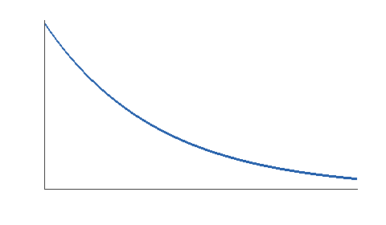

Atmospheric Simulation
A Brief++ feature tour
28 September 2026
Example Research Lab
Abstract
A small, self-contained report showing the document model and all seven output formats.
Introduction and scope
This report combines measurements with an idealized model. The word Brief++ refers to the report builder. See the project source for the code and [density-profile] for the generated figure. The report builder is documented by [example2026].
A report should preserve the meaning of its content across formats.
Model
The pressure model uses a scale height \(H = 8.4\,\mathrm{km}\) under a constant-temperature assumption.
Equation [pressure-profile] describes the synthetic curve used here.
double pressure(double z, double p0, double h) {
return p0 * std::exp(-z / h);
}Results

| Parameter | Value | Unit |
|---|---|---|
| Temperature | 273.15 | K |
| Pressure | 101325 | Pa |
| Scale height | 8.4 | km |
The values in [conditions] produce the trend shown in [density-profile].
- Set the starting conditions
- Review the output in every format
- Compare the rendered documents
- Check the details
- Check the figure and table
- Check the linked references
- Density
- Mass per unit volume
- Scale height
- Altitude over which pressure falls by a factor of \(e\).
Interpretation
The example emphasizes report structure, not atmospheric accuracy.
| Input | Illustrative profile |
| Outputs | Seven text formats and a PDF |
This paragraph was added from a DocumentFragment to demonstrate reusable content.
Backend-specific notes
HTML-only note.
References
- [example2026] Brief++ contributors. Brief++ project source and documentation. 2026. https://github.com/vrtulka23/briefpp